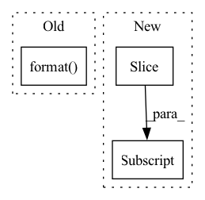

Pattern ID :34929
Before Change
device = output.device
if output.shape[0] % 2:
raise ValueError("Illegal shape, axis 0 not divisible by 2: {}"
.format( output.shape) )
batch_size = output.shape[0] // 2
similarity_matrix = self.similarity_function(output, output)After Change
if negatives is not None:
negatives = negatives.to(device)
q, k = output[:batch_size] , output[batch_size:]
// use negatives from memory bank
l_pos = torch.einsum("nc,nc->n", [q, k]).unsqueeze(-1)
l_neg = torch.einsum("nc,ck->nk", [q, negatives.clone().detach()])In pattern: SUPERPATTERN
Frequency: 3
Non-data size: 3
Instances Fragment ID: 100043010
Project Name: lightly-ai/lightly
Commit Name: 1157f1a371bc4f7d17ef2795e4410004e9261005
Time: 2020-10-20
Author: philipp.m.wirth@gmail.com
File Name: lightly/loss/ntx_ent_loss.py
M Class Name: NTXentLoss
N Class Name: NTXentLoss
M Method Name: forward(3)
N Method Name: forward(3)
M Parent Class: MemoryBankModule
N Parent Class: torch.nn.Module
M File Name: lightly/loss/ntx_ent_loss.py
N File Name: lightly/loss/ntx_ent_loss.py
M Start Line: 95
M End Line: 127
N Start Line: 100
N End Line: 144
Before Change
else:
sources = np.concatenate([sources, wave], axis=0)
segment_IDs.append("{}_{}-{}".format( source_data["utterance-ID"], start, end) )
mixture = torch.Tensor(mixture).float()
sources = torch.Tensor(sources).float()After Change
for _source in __sources__:
source, sr = sf.read(sources_data[_source]["path"])
source = source[start_idx: end_idx] .mean(axis=1)
print(source.shape)
sources.append(sources)
Fragment ID: 100043011
Project Name: tky823/dnn-based_source_separation
Commit Name: 550c9be6c6db5a89b57716fc49f1c95f913c05ad
Time: 2020-12-29
Author: 40362510+tky823@users.noreply.github.com
File Name: egs/dsd100/common/src/dataset.py
M Class Name: WaveDataset
N Class Name: WaveDataset
M Method Name: __getitem__(2)
N Method Name: __getitem__(2)
M Parent Class: DSD100Dataset
N Parent Class: DSD100Dataset
M File Name: egs/dsd100/common/src/dataset.py
N File Name: egs/dsd100/common/src/dataset.py
M Start Line: 50
M End Line: 74
N Start Line: 33
N End Line: 50
Before Change
super(ResNet, self).__init__()
if not len(layers) == len(strides) == len(dilations):
raise ValueError(
"The number of layers, strides and dilations must be equal, "
"but found have {} layers, {} strides and {} dilations".format(
len(layers), len(strides), len(dilations)) )
assert max(out_indices) < len(layers)
self.out_indices = out_indices
self.frozen_stages = frozen_stagesAfter Change
raise KeyError("invalid depth {} for resnet".format(depth))
assert num_stages >= 1 and num_stages <= 4
block, stage_blocks = self.arch_settings[depth]
stage_blocks = stage_blocks[:num_stages]
assert len(strides) == len(dilations) == num_stages
assert max(out_indices) < num_stages
self.out_indices = out_indices Fragment ID: 100043009
Project Name: wxinlong/solo
Commit Name: 0e747be830adbfb7aeb67d79871e116283971dbc
Time: 2018-10-10
Author: chenkaidev@gmail.com
File Name: mmdet/models/backbones/resnet.py
M Class Name: ResNet
N Class Name: ResNet
M Method Name: __init__(11)
N Method Name: __init__(11)
M Parent Class: nn.Module
N Parent Class: nn.Module
M File Name: mmdet/models/backbones/resnet.py
N File Name: mmdet/models/backbones/resnet.py
M Start Line: 207
M End Line: 251
N Start Line: 214
N End Line: 257